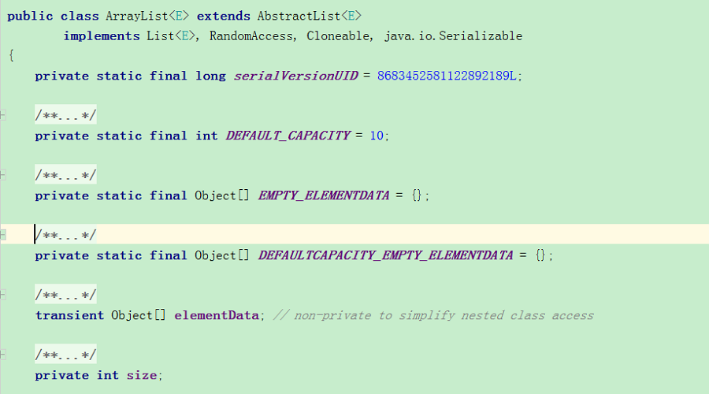
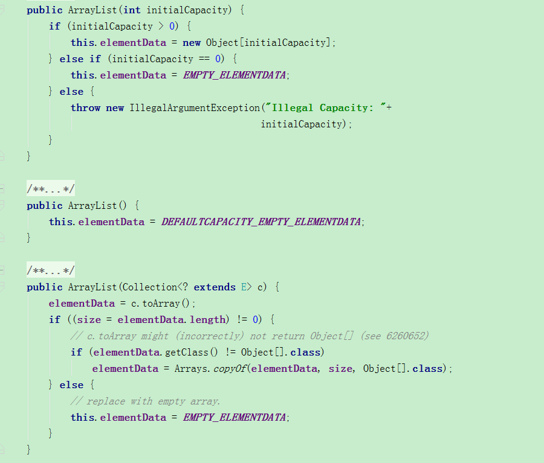
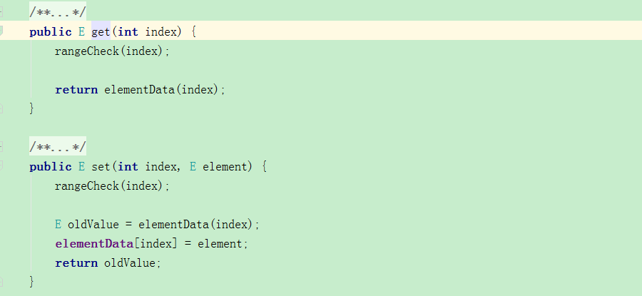
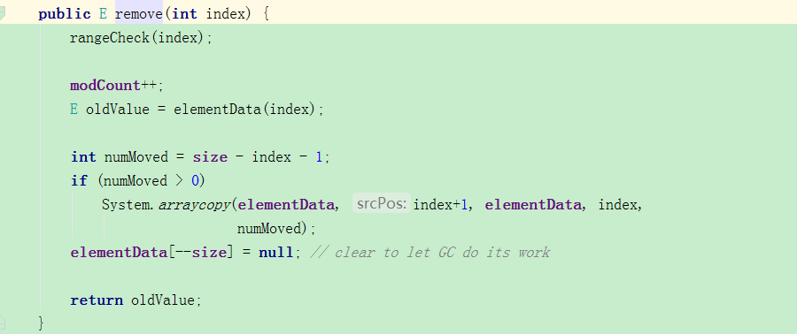
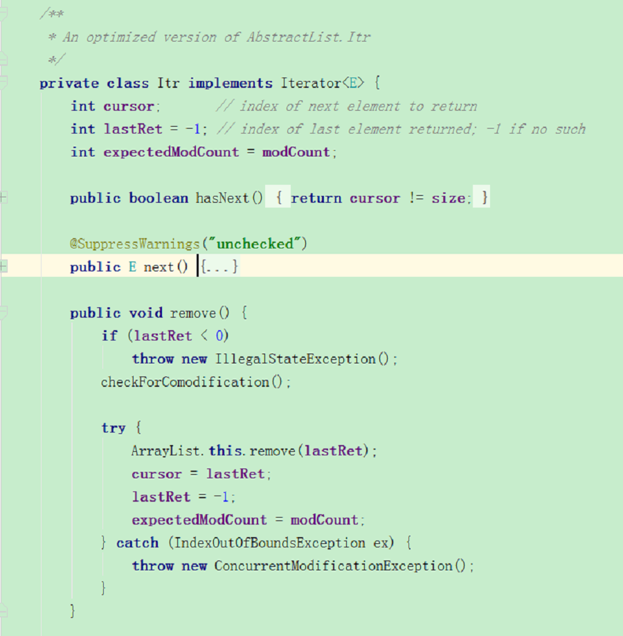
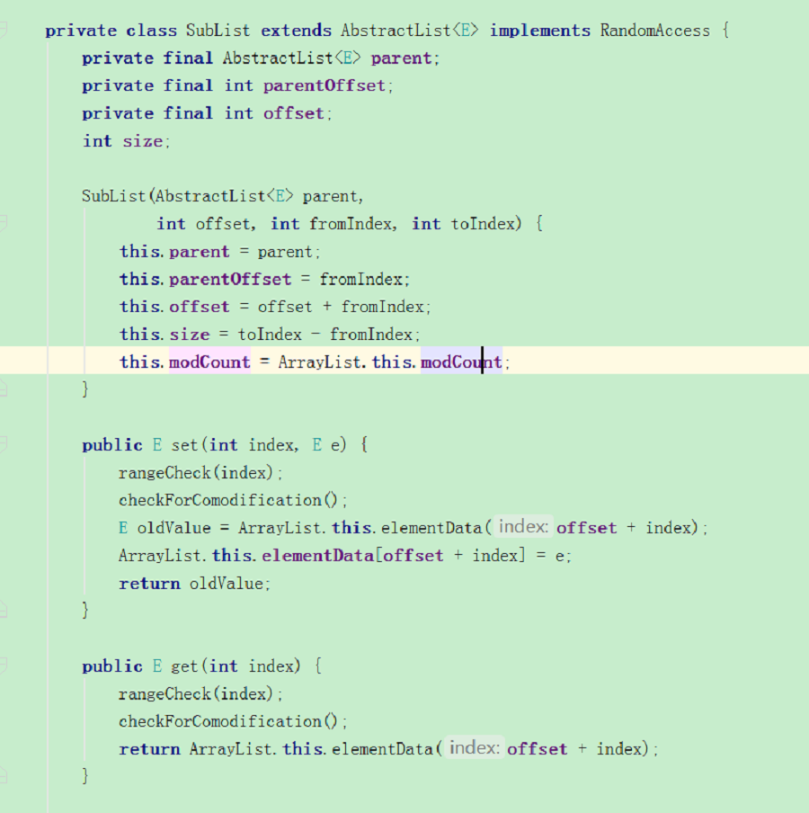
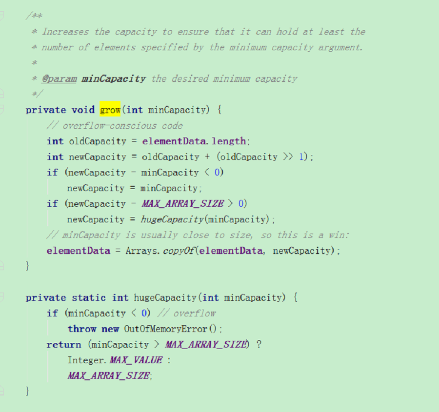

ArrayList
- ArrayList简介
- ArrayList源码分析
- ArrayList扩容机制
ArrayList简介
- ArrayList可以理解成一个”动态数组”，由于Java中数组都是固定大小的，但ArrayList是一个可以动态的添加和删除元素的List,其底层仍然是由数组实现的。ArrayList继承自AbstractList，并且实现了List,RandomAccess,Cloneable,Serializable这四个接口。
- ArrayList与Vector有很大的相似性，最大的区别在于ArrayList是线程不安全的，而Vector是线程安全的，若要使用线程安全的，请使用
List list = Collections.synchronizedList(new ArrayList(...)); - ArrayList与LinkedList同样也有很大的相似性，二者作为List的主要两个实现类，主要区别在于ArrayList的add/remove操作慢，而get操作快，而LinkedList则恰好相反，究其原因还是在于底层实现一个是数组，一个是链表
ArrayList源码分析
成员变量
ArrayList内部持有Object[]来作为存储容器，其默认的CAPACITY大小为10，最大的容量为Integer.MAX_VALUE

构造方法
ArrayList为我们提供了3种构造方法，分别是：
- 指定初始容量的构造方法
- 无参构造方法
- 使用特定集合的构造方法
第一种为elementData初始化成对应的指定容量大小，第二种直接构造一个空的elementData，第三种则是通过Arrays.copyof来初始话elementData并赋值

核心方法
由于ArrayList本身的底层实现是数组，所以对于其操作的add remove get set 等方法全部都是基于数据元素的操作，从源码截取了几个方法，本身逻辑均不复杂

remove方法:

内部类
ArrayList还内置了三个内部类来帮助我们完成一些其他的操作，其中包含实现了Iterator接口的Itr，实现了ListIterator接口的ListItr，还有一个SubList
Iterator
由于Itr和ListItr只是实现的接口略有差异，在此截取了Itr执行remove的代码片段，我们可以看到，在Itr内部中含有一个新的expectedModCount变量，其初始值为modCount，
在执行remove操作的时候，会先进行判断expectedModCount与modCount是否相等，若相等，则执行remove操作，若不相等，则会抛出ConcurrentModificationException异常，相信小伙伴们对这个异常并不陌生，
平时在代码中对List写foreach循环的时候，若执行了remove操作，则就会遇见该异常了，而如果使用Iterator去执行remove操作，就可以正常删除了。原因就在于此哈。

SubList
ArrayList提供了SubList的内部类，其主要作用是提供对于List子集合的一个视图，我们需要注意的是，这仅仅是一个视图（与数据库里的概念类似）,任何对原List的操作均会体现在SubList上，而任何在SubList上的操作也会同样
的反应到List上，因为其本质上都是对同一个elementData做操作，因此，我们在进行add、remove等structurally modified的操作时，一定要特别注意subList也会进行相应的变化

ArrayList扩容机制
为了充分的利用内存空间，代码规范也会让我们在初始化ArrayList就为其指定capacity，因此，我们有必要也了解一下ArrayList中的扩容机制，在执行add，addAll等操作时，会进行capacity的check，与当前elementData的size进行对比，
若需要扩容，则会newCapacity = oldCapacity + (oldCapacity >> 1)，新容量将会是旧容量的1.5倍

总结
- ArrayList的底层实现是数组
- ArrayList是非线程安全的
- ArrayList最好在初始化时就为其指定容量大小，每次在做add操作时，会触发容量检查，若当前数组小于元素个数时，会新申请1.5倍的数组空间，将原有数组复制
- ArrayList遵循 fail-fast 机制，在执行add remove 等结构性修改的操作时，会抛出异常，若要在遍历过程中添加或修改元素，可以使用迭代器
- ArrayList提供的subList方法实际上是返回的是其一个内部类，底层仍然指向同一片数组空间，只是作为视图使用，无论对List本身操作或者对SubList操作，二者相互之间均彼此影响